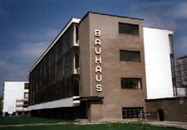

Articles The
Bauhaus Pottery In 1920 the Bauhaus took on master potter Max Krehan as a collaborator in setting up a pottery workshop. Krehan's initial class consisted of 5 students, who worked at his pottery in Dornburg, 30 kilometers away from the main school in Weimar. The ceramics students were more self-sufficient that some of the other craft workshops, partly due to the physical separation, partly due to the ceramic tradition of self-sufficiency, e.g. by digging up one's own clay. Krehan taught the principles of pottery: throwing on the potters wheel, turning (trimming), glazing and firing kilns. Gerhard Marcks, who was also involved in other aspects of the school, taught the history of ceramics and encouraged experimental ceramic design. In 1924 Otto Lindig took over the technical aspects of the Bauhaus pottery, while Theodor Bogler looked after the commercial side of things. Architect Walter Gropius, at the time director of the school, and himself a sometime ceramic designer encouraged machine-made ceramic mass production, although there was some resistance to this idea, e.g. from Gerhard Marcks, who believed that the Bauhaus should be an educational institution and not a 'factory'. None-the-less, the Bauhaus pottery studio provided designs for mass production in industry of ceramic containers and other items, particularly slip-cast forms designed by Lindig and Bogler. By 1925, the fate of the short-lived Bauhaus pottery workshop was sealed. The State of Thuringia, dominated by right wing parties and intolerant of Bauhaus ideas halved funding for the school and shortly after sacked Gropius. The Bauhaus moved to Dessau and the pottery workshop was disbanded, never to be resurrected again. By the early 1930's Nazi Germany forced the liberal, forward-thinking Bauhaus to close it's doors altogether. Despite this, Bauhaus ceramic design has had a long-lasting effect on German and European ceramic design. A good example of the style is immortalized in Gropius' famous Tea Service, still being manufactured by Rosenthal today. |
|
| © Ceramics Today |